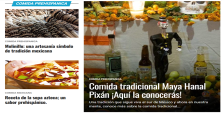
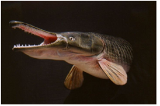
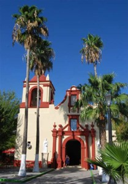
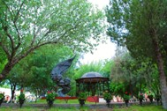
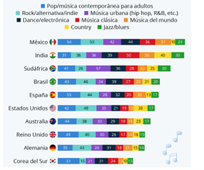
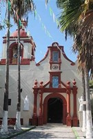

Características generales
Este Pueblo Mágico es conocido como “El jardín de Nuevo León” ya que es el oasis de la región. Su nombre viene en honor a Anastasio Bustamante, un militar y expresidente de México, anteriormente se le conocía como San Miguel de Aguayo de la Nueva Tlaxcala.
A una altura de 450 m y de clima seco y cálido; con una temperatura media de 21º C. El río huizache atraviesa la región y diversos ojos de agua se encuentran cerca del cañón haciendo esta tierra favorable a la siembra; destacando los cultivos de aguacate criollo, caña de azúcar, higos y nuez.
Se ubica a 1:30 h min de Monterrey, 2:00 de Monclova o de Nuevo Laredo; se sitúa al noroeste del estado, limita al norte con Lampazos de Naranjo y Coahuila; al sur con Mina y Villaldama; al este Villaldama; y al oeste con Mina.
La población total de Bustamante en 2020 fue 3,661 habitantes, siendo 50.2% mujeres y 49.8% hombres.
Economía e industrias
Según datos del Censo Económico 2019, los sectores económicos que concentraron más unidades económicas en Bustamante fueron Comercio al por Menor (78 unidades), Industrias Manufactureras (34 unidades) y Servicios de Alojamiento Temporal y de Preparación de Alimentos y Bebidas (29 unidades).
El gráfico de línea muestra la evolución trimestral del ingreso por remesas. En el segundo trimestre de 2022, Bustamante registró un monto de remesas de US$644k.
Salud
En Bustamante, las opciones de atención de salud más utilizadas en 2020 fueron Centro de Salud u Hospital de la SSA (Seguro Popular) (2.44k), IMSS (Seguro social) (704) y Consultorio de farmacia (169).
En el mismo año, los seguros sociales que agruparon mayor número de personas fueron Pemex, Defensa o Marina (2.14k) y Seguro Popular o para una Nueva Generación (Siglo XXI) (882).
Educación
En 2020, los principales grados académicos de la población de Bustamante fueron Secundaria (900 personas o 34.2% del total), Primaria (767 personas o 29.2% del total) y Preparatoria o Bachillerato General (311 personas o 11.8% del total). La tasa de analfabetismo de Bustamante en 2020 fue 3.8%. Del total de población analfabeta, 55.8% correspondió a hombres y 44.2% a mujeres.
NOTA/REPORTAJE/NOTICIA
Comida

|
El Pejelagarto, una delicia de la gastronomía mexicana
Así que, si te gusta la comida exótica y deliciosa, este artículo es para ti. El pejelagarto es un animal acuático con una piel escamosa y rígida, que en verdad no tiene el mejor aspecto de todas las creaturas acuáticas.
Su cuerpo es el de un pez, pero con cabeza similar a la de un lagarto, con dientes pequeños, afilados y con una forma puntiaguda. Lo que más lo caracteriza es su hocico alargado y con una pequeña forma de espátula.
|  |
Arquitectura

Sierra del Guadarrama de Madrid
|
Bustamante Arquitectura es tu estudio de arquitectura en la sierra del Guadarrama de Madrid, localizados en La Navata. Nos especializamos en la arquitectura Residencial, de Hospedaje y de Ocio.
|
Religion
No te pierdas las festividades de este pueblo mágico
El señor de Tlaxcala es un Cristo milagroso que se adora en el pintoresco pueblo mágico por el sentido de protección ante la importante figura religiosa.
Por lo tanto, en el último día de la semana de festividad lo llevan a recorrer las calles de Bustamante en símbolo de agradecimiento por permanecer y nunca irse del encantador pueblo.
| |
Tradiciones
|

|
Festividades al Señor de Tlaxcala. En el pueblo mágico de Bustamante
Esta fiesta se realiza cada año del 28 de julio al 6 de agosto y consiste en peregrinaciones de diversos puntos del pueblo mágico hacia la Parroquia de San Miguel Arcángel.
Además en este lugar se lleva a cabo un rosario y un baile típico que se realiza en la por el Señor de Tlaxcala. El nombre de la danza que practican es “comparsa”.
Consiste en danzar con huaraches y guajes que los habitantes fabrican. Llevan un ritmo equilibrado y generan la misma música que bailan con gratitud y espíritu.
|
Lengua
| Importancia de las Lenguas Indígenas
Una lengua es un elemento clave de una cultura. En el habla es en donde se dan muestras de la forma de comprender el mundo de cierto grupo de personas. Sucede con todas las lenguas del mundo, hay palabras que existen solamente en una lengua y es porque son necesarias para expresar situaciones o experiencias propias de cierto grupo de personas.
Por ejemplo, para los inuit deben de existir muchas maneras de llamar al color blanco porque es de lo que más están rodeados. O la palabra saudade en portugués que expresa una tristeza nostálgica y que por su belleza se toma de préstamo en otros idiomas. La palabra “kuchisabishii” en japonés sirve para decir que a veces comemos sólo porque “nuestra boca se siente sola”. O en México la palabra “ñáñaras” para expresar una sensación de incomodidad o disgusto. En realidad, en México tenemos muchas palabras así de expresivas.
|
|
Musica
|  |
¿Cuáles son los géneros musicales que más se escuchan en México?
De acuerdo con dicho portal, el pop actual es el género musical más escuchado por los mexicanos con un 52 por ciento en las preferencias. Cabe destacar que en este género se encuentran artistas como BTS y Dua Lipa.
|
Clima
| Finalmente, te recomiendo visitar Bustamante durante la temporada de las festividades al Señor de Tlaxcala, su clima es agradable para disfrutar de las grutas, fiestas y paisajes. |

|